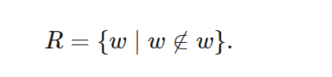
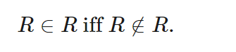

Link to other articles
A counter-argument to Russell's paradox and the antinomy: substance, ambiguity, infinity, intuition
I got the idea for this article a while ago, while watching an MIT lecture video on the book "Godel, Escher, Bach" (see references for the video) out of random curiosity. Though I haven't read the book yet, that lecture was interesting. There was a section of the video where the lecturer discusses a "barber's paradox" (an illustration of "Russell's paradox") that has been giving mathematicians a headache for 100 years.
I want to write down some thoughts about the paradox and the concepts it entails, and why I believe that this "paradox" is not a paradox at all and rather the result of illogical construction.
The barber's paradox
According to the video, the barber's paradox is as follows:
A barber decrees to shave everyone who does not shave themselves, and to not shave anybody who shaves themselves. Does he shave himself?
It seems that any answer to this question would lead to a contradiction. If we answer "no, he does not shave himself", then he is one of those people who "does not shave themselves" and therefore should be shaving himself according to his decree. However, if he does shave himself, then he is one of those people who "shaves themselves" and therefore should not be shaving himself. Sadly, the barber seems to be caught in a life of intrinsic unfulfillment, as he can never live up to his decree. He is neither allowed to shave himself, nor to not shave himself.
Russell's paradox
The barber's paradox is an illustration of a more general concept called "Russell's paradox", developed by Bertrand Russell. According to the Stanford Encyclopedia of Philosophy (see second reference below), the paradox is as follows:
If we consider the class of all classes which are not elements of themselves, or set of all sets which are not elements of themselves:

Then:

This is because we define R by construction to only include sets which are not elements of themselves. So if R is not an element of this set, then R is not an element of itself, therefore R is in R by construction. But if R is in R, then R cannot be in itself.
The barber's paradox seems to be a specific realization of Russell's paradox. We can realize "sets which are not elements of themselves" as people who cannot shave themselves; and the action of "shaving" corresponds to "containing" in Russell's paradox. Russell's paradox involves a set containing all others that do not contain themselves, and we struggle to see if it can contain itself; likewise here we consider a person who shaves all people who cannot shave themselves, and struggle to see if he can shave himself.
As an aside, I came across that Stanford philosophy article searching for "Russell's paradox", and the article is on "type theory". I haven't investigated this deeply yet but it seems there are significant parallels between "type theory" and my ideas presented in this article. Definitely something to explore more, and at least serves as validation that I'm not completely on the wrong track in these articles.
The nature of contradiction
This might be a bit provocative, and I might be the idiot here, but really it does seem to me that this "paradox" is merely the result of a "spurious construction" and is therefore not a paradox at all, but the execution of irrationality. This conceptualization that has puzzled mathematicians and led to the development of "type theory" among other systems actually has no salt, other than the extremely obvious.
Before I get into it, I would like to delve into the nature of "contradiction". Contradiction is what belies Russell's paradox; its construction seems to contradict a logical law that seems like common sense, which is that a logical statement can either be true or false (this is called the "law of the excluded middle" I believe). If we take this at face value, it is easy to see why this can cause an uproar; this law of excluded middle is almost intrinsic to our understanding of the world through a rational and purely logical lens. To see that we can contradict this law could be tantamount to a paradigm shift affecting our most fundamental and intuitive tools for rational judgement.
Before explaining why we don't need to panic, we need to examine, on a general level, what leads to contradictions in statements. When performing a logical deduction, a contradiction can occur when we utilize two conflicting pieces of information. In other words, it occurs when we loop in two statements: one which states "S is true" and another which states "S is false". Ideally both of these statements are looped in separately and a priori (meaning, as assumptions before the logical deduction begins); this allows us to easily troubleshoot if we do encounter a contradiction. Usually, we encounter a contradiction when we explicitly make an "unfounded" assumption and run with it; implicitly this utilizes two pieces of "prior information": the explicit assumption ("extra" information) and the base mathematical system itself (including all statements proved previously in the system). Since the mathematical system itself is (hopefully and ideally) rigorously constructed and "fallacy proof", we conclude that contradictions arise due to the "extra" information which we assumed. This is why proofs by contradiction work, if we assume some statement S, and that assumption leads to a contradiction in our derivation, we realize that our assumption of S is what caused the contradiction, and therefore can say that S is false in our system.
In short, contradictions can arise either due to an invalid extra assumption, or due to some fundamental crack in our system. It seems to me that the hype around Russell's paradox arises from the belief that it exposes the fundamental crack in our system. I would argue, however, that the contradiction merely arises due to an "invalid extra assumption" which it makes. I feel in fact that the irrationality of Russell's constructions is so egregious that I can tackle it from many different angles.
Differentiating between objects; substance
Key to Russell's paradox is the idea that the overarching "set of sets" R is itself a "set" of the same substance as the sets it contains.
The paradox entails the deduction: "if R is not in itself, then R is in itself". The conclusion that R is in itself can be unpacked: "since R is not in itself, then it is a set which is not in itself. Therefore R is in R". That unpacking might seem trivial and unnecessary, but it illuminates an important assumption we are making: that R is itself a set of the same "substance" or "type" as the sets that it contains. That is the only reason we can then say "R must be in R".
We need to further consider this assumption of R having the same substance as the sets it contains. First, let's take a look at a set of a slightly different nature than R but illustrates the potential absurdity of the notion of "equal substance" of the container. Consider the following definitions:
Definition 1: a set of order 1 does not contain another set.
Definition 2: a set of order 2 only contains sets of order 1 and possibly other non-set objects.
Definition 3 (defined inductively): a set of order n only contains sets of order n - 1 and possibly sets of lower order than n - 1 and other non-set objects.
So a set of order n contains sets which contain sets which contain sets... n recursive levels of this. Now I will construct a set S which contains all sets of order n or below which do not contain themselves. Notice this is just Russell's set but with an explicit mention and bound on order. Clearly, the paradox does not apply here. S clearly does not contain itself, because S is of order n + 1 and S's "domain" only considers sets of order n and below, so we don't have to worry about a paradox. The difference here is that by looping in the order of sets, we have distingusihed between objects. The set S is now a different type of object than the sets it contains, thanks to this formulation (which is intuitive). This breaks the paradox.
It becomes clear now that Russell's construction is problematic, in the sense that it fails to define "set", meaning any interpretation is "fair game"; I could just claim that R is not a "common set" and Russell would have no response due to the ambiguity in his construction (more on this in a later section). But sticking to "common sense" ideas of what constitutes a set, let's try to loop in the concept of "set order" into Russell's formulation. The example of S consisted of limited set order, and we showed the paradox did not hold for this case. We should already be thankful, since most "common sense" sets we make use of have a limited order anyway. Russell's set is different in the sense that it entails a set of "infinite order". It contains every "limited order" set, all the way till order n goes to infinity.
In the next section, we will see why this becomes absurd to work with.
The set that contains all other sets that do not contain themselves is impossible
Russell's set is strongly tied to the concept of "infinity". As soon as we put in all the sets of order n, we can continue putting the sets of order n + 1. And there is always a continuation.
Since there is always a continuation, we never actually end up constructing Russell's set. As soon as we put in (infinitely many) sets and think we have completed it, we can construct another level on top of it.
This is just the "set version" of the concept of infinity within numbers. We can only work with an infinite progression in the numerical realm if that progression converges to a limit. However, numerical sequences do not necessarily converge; if a sequence never stabilizes, there is nothing to work with at the end. We came up with the concept of infinity to represent and deal with specific cases of this, where the sequence is "unbounded". There seems to be a canonical event, which occurs during childhood, where we are all first exposed to the concept of infinity by our friends; when the "greatest number" is suggested, some other kid chimes in "oh yeah? What about that number plus one?" Then the next kid scoffs "well, what about that number plus one plus one?" Sometimes a kid declares that "infinity" is the greatest number, then the same kids smirk and declare "well, what about infinity plus one?" and the hunt seemingly goes on. But if these kids knew their real analysis, they would see that there is no problem anymore, because the perhaps unsatisfactory answer is that there is no greatest number, and infinity is not a number. It is merely a concept and symbol of unboundedness. So not only is it spurious to claim infinity as the greatest number, but it is spurious to think about infinity plus one as being a number. Meaning, the end of this unbounded sequence of numbers is clearly not of the same type as the numbers used in its construction. Infinity is not a number. And all mathematicians believe in this and comfortably take it for granted without second thought, as they should.
If infinity is so easy to accept, why is Russell's paradox so debilitating? Russell's set is extremely similar to an "unbounded sequence of numbers"; it is an unbounded sequence of sets. For every set we put in there, exponentially more spring up. We never get to the end, in fact the end escapes us further and further the more we catch up to it.
Think about a "power set". A power set is "the set of all subsets of a set". So it will contain the set itself, and all of its subsets, and is 1 order higher than the original set. Russell's set can clearly be viewed as an infinite chain of power sets from the original "basis" of the sets (real numbers, or whatever else). It is quite obvious that the power set of a set is of a greater "size" than the original; in fact Cantor showed that the power set of a set is of higher cardinality than the original (I hope to write more on this in another article), so the "degree of infinity" increases with every order of set we add. The end of Russell's set is literally never in sight, and even gets worse as we move along. If we were dealing with numbers, we would just declare the sequence as "unbounded", as having no end, and move on with our lives unfazed. Could we not just say the same thing about Russell's set? It is logical to say "this set has no end, so let's move on".
Despite this clear link to unbounded infinity, Russell's paradox is constructed according to the claim that there is an end to his set. Not only that, but that this set is the same as every other set which constitutes it. This is an absurdity. It is tantamount to taking some unbounded sequence, assuming it has a limit, and then performing a deduction treating that (non-existent) limit as a regular number. This is an absolute heaven for contradictions, when done numerically like this. Recall, a contradiction will occur, somewhere, when some absurd assumption gets externally injected into our system. And with Russell's paradox, of course we get into a contradiction when we assume an unbounded container has an end; obviously it will then contain itself, and continue to contain itself in an infinite chain.
It seems Russell's paradox is merely the same "paradox" that those schoolchildren run into. It is his own version of stating that infinity is the greatest (existence of a limit) number (same substance as its constituents) and then "exposing a contradiction" by wondering about infinity plus one.
Thankfully, the "fundamental contradiction" at which Russell's "paradox" arrives is due to an absurd construction, and not the set theoretic foundation itself.
Containers are of a different substance
Let's go back to the idea of "object substance" and further drive the nail into the coffin of this paradox. Once again, the only way the paradox works is if we assume "the container of all containers" to be of the same substance as its constituents. If not, Russell's paradox does not apply. As an example, if we consider a set of real numbers, we do not need to worry about any other objects being in this set; its domain is of real numbers, so any other objects, such as sets or complex numbers, have no bearing on its contents or construction. If Russell's set is not of the same substance as the vaguely defined "other sets", in other words, if Russell's set is not in its own domain, then we have no need to worry about its condition "where the set is not in itself", because this condition would only apply to the other types of sets, and even if Russell's set is not in itself, it does not matter in terms of the "construction condition" as we don't have to apply it to other distinct objects.
Already, intuitively, sets never belong to themselves. If a set belongs to itself we end up in an infinite chain. If the set is an element of itself, then the "inner set" also contains itself ad infinum. One way to realize a "set which belongs to itself" is by being very vague, for example, if I create a set of "everything which is not 2", then this set I just created is also not 2, and by a twist of logic I can then say "this set is in itself" (there is a huge caveat to this; which is that causality is broken in this reasoning; we start by taking all the things which are not 2 and puting them in a set, but at this point in time the "set of all things that are not 2" did not exist until we collected these things; so it is a mistake to claim naively that "the set is in itself" since it did not exist a priori, and we only get the "infinite recursion" when we reflect "post-hoc", and even when we do reflect post-hoc and expand our set, we didn't "finish" the set and we get into the same problem with infinity which plagued Russell's set). The idea that a set does not belong to itself implies a "substance difference". If we visualize a set as a "class" of objects, then clearly the objects in the set can be viewed as "objects of the same substance" under the frame of that class (meaning, we can say "they are of the same substance" because they are in the same "class"), and if the set is not in itself then clearly it is of a different class than its constituents (if we can even assign the overarching class to another class at all).
So intuitively, saying "the set R does not belong to itself" is equivalent to "R is not of the same substance as its constituents" by the intuition of the previous paragraph. Then we don't even have to worry about the "paradox" since we never have to care about R being in itself, since R is a different kind of set. Perhaps this "philosophical/semantic proof" is not "rigorous" but it goes to show that the vagueness of the set's construction is irresponsible; the vagueness causes deductions to be "open to interpretation", and that is the worst possible quality ever attributable to a supposedly rigorous and rational subject as "mathematics".
Let's try skipping to the necessary conclusion for the paradox, that R is of the same substance as every other set, and see what happens. All sets have subsets, and can thus be converted to a corresponding power set (the set of its subsets). This fact is pretty much a property of "sets". Another property which will lead to the same conclusion is that a set can beget a new set through a "container" operation; given any set S we can construct another set T which contains S. Clearly T is not the same object as S. If we are to assume that R is in the same class of "set" as the sets it contains, then clearly those "properties of sets" apply to R. We can use either property to generate a new, different set from R, which is larger than it or "overarches" it. By Russell's construction, we assumed that R contained every other set, but since we generated a set containing/overarching R, then R cannot contain all sets.
So, if we assume R to be of the same substance as its sets, we use the properties of sets to arrive at a contradiction in Russell's construction in itself, before we even get to the paradox part. Notice that the logic amounts to the same reasoning as the previous section on the "unboundedness" of the Russell set. The contradiction then shows that we made a false assumption, and we made two assumptions: that R exists, and that R is of the same substance as its constituents. At this point it is clear that R cannot exist anyway, but for the sake of dragging this on, even if R exists, that would mean that the second claim that R is of the same substance as its constituents cannot be true, due to the contradiction we unveiled. Then, since R is not of the same substance as its constituents, we have no paradox to worry about since R does not contain itself.
Funnily enough, the effect is almost the opposite of Russell's paradox's initial impressions. By so many different angles, the set doesn't make sense.
Ambiguous objects; the importance of unambiguous language; awareness; crystallization of ambiguity
As I've alluded, one of the reason Russell's paradox sounded convincing and real is because of ambiguous language. In particular in the vague notion of "set" (whether or not this same concept of set applies to R in the same way it applies to all other sets). Not to mention the jump to the conclusion of the construction of R, when R cannot actually ever be "finished" to begin with (pun intended).
It is important to emphasize that in the practice of logic or pure rationality, having any ambiguity in the statement is a major misstep and leads to "undefined behavior". It is a rife source for contradiction if we can use one sense of an ambiguous word/concept in the statement and then loop in another different sense of the word in the same logical deduction. The deduction will appear "logically valid" following from the statement, but the statement itself is not sensible, and such cases should not be allowed to pass for "logic" or "mathematics". Russell's paradox highlights that the logical statement itself, which can be seen as the "beginning" of a deduction, should be scrutinized just like the deductive steps (the "process") and the end result. If the statement does not pass the "unambiguity sanity check", then it can immeidately be thrown into the bin of subjective arts instead of the math department's backlog, so that people may see what they want to see in it, and they literally can when a term or concept is ambiguous and admits multiple possibilities.
A logical statement should be boiled down to the point where things are at the atomic level. Usually this happens intuitively. For example, statements about natural numbers tend to be unambiguous because the basic definitions and "properties" of natural numbers are well mapped out. We can know that the addition/subtraction of a finite amount of natural numbers produces another natural number. We know this is not necessarily true for division. Speaking of division, there do exist ambiguities such as the term "0 divided by 0", but mathematicians are already aware of the ambiguities underlying that operation and tend to avoid it anyway.
Awareness of what is ambiguous is important. In order to be aware of ambiguities, as much as we can, it is important for the development of mathematics to proceed in a rigorous fashion. When adding "new concepts" or definitions or operations to the overarching system of mathematics, we must make sure to explore the concept and rigorously prove any hypotheses that arise. Clear examples of this arise when dealing with the concept of infinity, which is slightly unintuitive to work with at first. Mathematicians took care to thoroughly define convergence, boundedness, and all of these related concepts, and from there managed to prove the properties of infinite sequences and series that are widely used to mentally shortcut our current explorations of them. Thanks to their work, these shortcuts can be trusted and rest on a solid and clear bedrock of definition.
Russell did not adhere to this philosophy of "strict meaning" and let a few things hang loosely. However minor, any such deficiency can be exploited to produce some "paradox". Russell's paradox is purported to break the "law of the excluded middle" (where a claim can only either be true or false). However, he did not expose a pre-existing contradiction in the underlying foundations of mathematics, he actually directly injected the crack by spraying these loose notions in his statement. Statements are meant to be "realizations" of the system, and by realizing a statement with objects which are ambiguous or multifaceted in their meaning, we let this once excluded middle creep into the system. These ambiguous objects we place into our system have a "middle": they can be seen as having property X but also a competing property Y. Thus, before entering the system, this object of ours already disobeys our desired law of excluded middle: it has both X (and not Y) if we take the first meaning, and also does not have X (and has Y) if we take the second meaning. The actor performing the deduction has been given free reign to legally pick and choose and mix up the meaning. It is not the system's problem if the actor is irrational, and in fact it is encouraged for actors to (purposely) be irrational from time to time (perhaps without knowing), because this opens up the door for the beloved technique of proof by contradiction. And when we perform these proofs by contradiction, we submit to the rigorous truth of the system and throw away our own irrational claim without further resistance (of course, you can challenge the system and dig through the weeds of the commonly accepted deductions added to the system throughout the history of mathematics, but until one of these is rigorously disproven, which seems to be on extremely rare occasion anyway, we cannot simply assume that it is the system that is false). We cannot simply close the door on "external irrationality", but at the same time we cannot make the mistake of injecting irrationality and claiming that irrationality to be the "rational" part.
We often find that in vague statements, we can "crystallize" the ambiguous objects into unambiguous ones, in other words, assign a specific truth value to those undefined properties and run the deduction with that unambiguous meaning. We did this in the section above, we assumed Russell's set is the same as all other sets, and found a clear contradiction in that crystallization; and we know that if Russell's set is not the same as all other sets then there is no paradox. Both possible crystallizations led to the same conclusion that Russell's set has no paradox. Of course if we leave the statement ambiguous and uncrystallized, we are free in our deduction to use one property when it is convenient, then the other when it is convenient, and arrive at a conflicting conclusion. In Russell's deduction, he first goes along with R adhering to the traditional meaning of set, and also loops in another "copy" of R that is not a traditional set (that cannot be mapped to a higher set), and of course arrives at a contradiction by letting the first meaning of R belong to the second, irreconciliable meaning of R.
As an even better demonstration of crystallization in action, let's return to the barber's paradox. Recall the "statement text":
A barber decrees to shave everyone who does not shave themselves, and to not shave anybody who shaves themselves. Does he shave himself?
This is actually worse than the boilerplate Russell's paradox in terms of the scope of ambiguities. Let's tackle a few. The most important is to strictly define what "shave oneself" means, because this admits a plethora of possible interpretations. This is important to define, because the heart of the barber's paradox is in fact the barber's complete confusion as to what it means to shave oneself, so let's help him out. If someone does not "shave themselves", does that mean has never used held a razor with their own hand and shaved themselves? If so, the paradox is solved. The barber must shave himself exactly once and never again. Well, what if instead, "shaving oneself" means "does not use their own hand/razor to shave more than once every 2 years?" Then the puzzle is also trivial to solve: the barber must shave himself, but less than once every two years. Clearly define it any reasonable way you want, and the paradox should dissipate.
The scope of ambiguities in systems; whether they matter
You'll notice that even the statements in the crystallized barber's paradox have some ambiguities, for example is "less than once every two years" referring to a strict rule, or some long-run statistic? We could probably come up with some new barber's paradox that targets these ambiguities. But for the sake of the initial paradox, we have crystallized enough to solve it. Still, the remaining system has holes that can be exploited to make a paradox, and always will until all these gaps are filled by rigour. The "system" I'm referring to is from the perspective of "statement"; a "statement system"; for example, these Russell's paradoxes arise from ambiguities in our statement, and we can view statements as belonging to some (ideally consistent) logical system interfacing the system under investigation. Contradictions arise due to the interface between the logical system and the mathematical system, in other words, due to one or more of the statement, the underlying mathematical system (including the repository of all previously proved statements and all used definitions), and the deduction. We can abstract this "overall system" view, beyond our current mathematical system which currently may or may not have ambiguities somewhere, and wonder if there exists a system without ambiguity. For example, thinking of Russell's paradox, we are able to breathe a sigh of relief because we know the statement can be further logically crystallized, to a point where there is no longer a paradox. But we wonder if the statement and system are completely crystallized; that is another thing entirely. This is analogous to atoms in physics (I use "atom" to refer to the fundamental building blocks of matter, that cannot be further broken down into a "clearer" object); we wonder whether our system, or whether there is any system, which can be fully atomic without uncertainty. I haven't explored this at all, but it may be possible, that our system and way of logical interface have points of exploitability, where we can angle a statement in a way that exploits a "vague" concept. In the case of Russell's paradox, we are safe because we found a gap inherent to its angle, and found a way to fill that gap (and avoid the contradiction), and we can thus reject the statement. But are there always gaps? Equivalently, are there always ways of filling the gap? Imagine we start with some statement, and we can detect some vague concept in its formulation, and perhaps we can crystallize the concept a bit and make it more specific and unambiguous. So we now have a new, better statement. Perhaps we can inspect that new statement and find another ambiguity. Is there a point where, after some number of steps of finding a gap and editing the statement, we end up with a statement where we detect a gap and cannot fill it? We should also make it clear that the statements should refer to objects that are actually in the system, if the statements refer to objects that are outside the system then of course we will have no way resolve such ambiguity, since we have no way to crystallize the objects, but we will have no need for concern in this case since it does not apply to our system. We only need to consider the case where the statements do refer to objects and concepts in the system.
Hopefully our mathematical system has the property of "inherent unambiguity", meaning that theoretical case above will never hold for it. If we even find one statement that cannot be crystallized, we have reason to re-evaluate the efficacity of whole system. But even if there is no system completely lacking any ambiguity, we can at least hope that the ambiguities present are ignorable for the sake of the system's everyday use. For example, as seen in the case of the barber's paradox above, even though the "crystallized versions" maintain further ambiguities, those ambiguities don't matter for the sake of resolving the initial paradox. They are ignorable for our purpose. So similarly, even if all possible systems entailing "logical interfacing to objects" contain some inherently present ambiguities, hopefully these ambiguities do not get in the way of the initial pyurpose of the system. So we can still hope that our mathematical system remains useful for the "purpose of mathematics" even if there exist some small unresolvable uncertainties.
Antinomy; link to Russell's paradox
The "Godel, Escher, Bach" YouTube video which gave me inspiration for this article also mentioned another concept of similar spirit of threatening the foundations of logic and mathematics: the concept of "antinomy". The example given by the lecture was this statement: "this statement is false". We get a contradiction if we try to plug in truth values for this statement. If we assume the statement to be true, then "this statement is false" is considered to be true, meaning that "this statement" is actually false. However, if we assume the statement to be false, then "this statement is false" is false, thus the statement is true.
After the previous reasoning on Russell's paradox, and assuming my logic wasn't completely faulty or "missing the point" (I do not deny the strong possibility of that), the antinomy is an easy nut to crack.
I know that logic and rigour are supposed to be tools of "rationality" and that the "ideal of rationality" is generally agreed upon to be divorced from emotion or "intuition"; but I believe intuition to be incredibly important, and should not be completely ignored or tossed to the side. I mention this because when reading a statement like "this statement is false", our gut generally signals to us that "this statement is weird". Let's not ignore that, and let's reframe from "gut feeling" to "unconscious brain, arbiter of the powerful pattern recognition process that is beyond our own consciousness". Indeed, "this statement is false" is a very bizarre "logical statement" to consider, let's examine why.
First and foremost, recall the previous sections on "ambiguous objects"; the antinomy is perhaps the absolute epitome of ambiguous objects. What happens if we rigorously unpack "this statement is false"? What does "this statement" refer to? This admits two main possibilities. First, if we allow S = "this statement is false", does "this statement" refer to S itself? This is a "recursive statement", this kind of thing should be ignored as it is absurd in itself, and is not even a valid logical statement. It is an "unwritten rule" of logic that a statement is a separate entity from the contents of the statement. Interestingly enough this argument is the same I used to write off Russell's paradox, except my argument is even more obvious in this case. A statement is intrinsically different from its contents. In fact, that fact could even be used to further illustrate my arguments about Russell's paradox: a set containing sets is different from the sets it contains, and a statement containing other statement is not the same as those statements. It is an obvious tenet (more in this in a later paragraph). The concept of "logic" was not meant to deal with such absurdities, which have no use and make no sense anyway; so let's stick within the domain of rationality which mathematics was meant to pursue and ignore that case of "recursive statement".
To make this clear; one could argue that "((2+2=4) is false) is false" is the same as "2+2=4", which is contained within the statement, and thus the statement does contain itself. However, I believe this view is erroneous; and that at the statement level, "((2+2=4) is false) is false" is not the same as "2+2=4"; however, we do get the statement "2+2=4" when we reduce the outer statement. What I am saying is tantamount to the idea that logic and proofs require deductive steps. We could say that "((2+2=4) is false) is false" is isomorphic to "2+2=4" but they are not the same (homomorphic) (not sure if I'm using the terms "isomorphic" and "homomorphic" correctly). Statements (the realm of logic) follow different rules for "sameness/substance" than objects. For example, we can say that 2+2 is the same object as 4; and this carries through transitively through the "reduction" of 2+2. However, it is not immediately apparent that 2+2 is the same object as 4, once again, to see that this is true, we had to reduce. Reduction implies the furthering of deductive steps. Likewise, with "((2+2=4) is false) is false", we can perform two reductions to get to the statement "2+2=4" but that statement was not immediately the one we were dealing with, we only got there by reduction of the statement. Unlike objects, we cannot say that the initial statement is the same as the reduced statement. Logic is indeed all about deduction, which requires steps, transforming the initial logical statement as we go along; the whole concept of transformation clearly shows that we are not dealing with a homomorphism (the exact same object), and rather isomorphisms, as we go along the logical thread. So even in a case like this one, the overarching statement is different than the intermediate statements we obtain by deduction. ON top of that, the discussion in this paragraph was overkill when considering the antinomy, where we have S = "this statement is false", and since "this statement is false" is clearly not the same as "this statement" (they have opposite truth values) we do not even have to worry about the statement being reducible to its contents.
Now that we've eliminated the possibility of "recursive statement", you'll notice the logic used to obtain a contradiction from the antinomy is not valid. By "appeal to the obvious", we can say that "this statement" does not refer to S; but the logic used to derive the antinomy makes that assumption. We set S to either true or false and then derive a contradiction by delving into the contents of S, seeing that "this statement is false" is either true/false, meaning this statement takes on the opposite truth value of S. The only way a contradiction could arise from that is by equating "this statement" with S, in which case their opposite truth values would go against the "law of excluded middle" that a statement cannot be ambiguously true or false. Restating my previous argument about Russell's paradox, we only get an ambiguity in these scenarios because we externally inject an ambiguous statement, or contradictory concept (here that S overaches "this statement" but also is "this statement"); so of course the following "system of mathematics" will be corrupted by the writer of the statement rather than existing holes in the system. Anyway, since we can just quickly reject the absurd concept of S containing itself, we cannot get a contradiction in this manner anymore, and are merely left with a dangling, unprovable shell of a statement: "this statement is true" or "this statement is false", where we do not know anything about "this statement".
So the only case left to consider is that "this statement" is different than S, and this is the case we should pursue, since the other possibility is meaningless. So "this statement" could be either true or false; if it's false then "this statement is false" is true, and vice versa. Simple enough, and also unambiguous, except the statement is hollow: we cannot know anything for sure, because we do not know anything about "this statement". If we knew enough information about "this statement" (assuming of course, that it is a rigorously rational, valid logical statement, unlike this antinomy) we would be able to unambiguously determine the value of
"this statement is false"; so we no longer have a problem of ambiguity. However, we do not even know the statement being referred to, so we cannot say anything about its truth. This does not go against the rules of logic, it makes complete sense that we can say nothing here. The problem here lies with the writer of the statement, who should do a better job and not forget to tell us which statement he is referring to. Then we will have a valid logical statement when "this statement" is realized, and we should have no problem investigating whether it is indeed false.
Philosophy in mathematics
Interestingly enough, the arguments outlined here reduce to philosophical arguments; by simply switching the frame of the "substance" of things (to the more intuitive frame than what Russell and the antinomy would imply) we get out of these once disturbing contradictions in a non-illogical manner.
However, that "frame switch" is independent of the rules of logic. There is no explicit rule in our systems of logic that mention "a set is different from its contents" or "a statement is different from its contents". On the other hand, there are also no rules stating "a set is the same as the sets it contains" or "a statement can be the same as its contents". The latter "assumptions" are the heart of the "paradoxes" in this article, and the former ones (and I believe, obvious and intuitive ones) are the heart of my counter-arguments.
In other words, both the paradoxes and my own arguments rely on "proof by philosophy" which are external to the system, but once "integrated" have deep repercussions on the properties of the system. If we (implicitly) assume the latter absurdities we run into paradoxes that shake the very foundations of mathematics. If we take mine, we are "safe".
The above paragraph has striking similarities with debates about the "meaning of life" or whether "anything is real" (perhaps also whether "morality exists"). The only "true" answer to such questions is "we don't know"; indeed we can never know from the limited properties of our existence. However, nobody actually remains sitting there like a stump, people still act, move, think, and operate based on some principles; so individuals will always be making some assumption/leap of faith one way or the other (in fact all of us constantly, always, take enormous amounts of leaps of faith, and operate by infinite assumptions, in our daily life, and in the grand scheme of our existence). Since we can't deduce a rigorous answer to these "fundamental questions", but oeprate according to some answer anyway, we might as well choose the obvious answer and go from there (and the realization of the obvious, natural, sensible path will not fail to yield its fruit).
Likewise, when dealing with the fundamentals of mathematics and logic itself, there comes point where we, the mathematicians, attempt to construct the fundamentals. The concept is interestingly "chicken and egg": mathematics and logic are meant to reflect the reality of nature, which is allegedly independent of perception and our beliefs and attempts to investigate it (I want to write more on this in another article, but is nature really independent from these things?) However, it is us, the finite humans who are underneath nature, who construct the mechanisms of this logic! And even if we take our constructions of logic as the true interface to reality, we still need to make extra unforeseen considerations, such as answers about the "substance" of objects. These all involve questions which cannot be rigorously answered, but we might as well take the obvious path here, and it will pay dividends; ignore our intuition, and we end up with Russell's paradox.
References
Godel, Escher, Bach MIT Course, Lecture 1 (see "antinomy" section)
Article describing Russell's paradox (see first section)